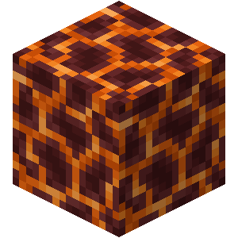
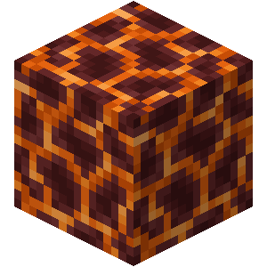

CryptechCraft is a multi-server Minecraft network with multiple game types and real cryptocurrency as in game currency. CrystalCrypts, CryptoCredits, Guns, ObsidianDestroyer and more custom plugins as well.


At the peak of old peoples civilization prior to the Great Shattering the massive empire at it's center held a majestic sight. A massive structure that became known as a Power Pylon was visible for miles in all directions, travelers gathered from far lands just to admire the technological advance the crystal brought. It was a glorious sight to behold, but with the destruction of the crystal and nearly entire empire that was built upon it, the knowledge used in those old days was also lost.
With that knowledge lost, prospectors today can extract only fractions of the power still stored within the many shards scattered across the world. The devices we build to do so may resemble the glory days of the old civilization, but compared to the grandness of that age, our devices are just a dot on the map.
Most kingdoms much smaller in size today are still built around the shards with pylon resembling devices at it's center. There engineers constructed up to four infusers, which extract power and disperse it into all four cardinal directions. Enhancer devices and consequently Stabilizers are often found in bigger kingdoms where rapid expansion required more energy, further away from the shard. But these advancements don't come cheap as they require constant maintenance in order to keep things stable and operational. The biggest of kingdoms today also invented devices known as Secondary Crystals which supply energy to furthest villages of the realm. There are also wispers of technologies that can hold the power itself, people whisper of the word Battery, if the rumors are to be believed, who knows what else this can bring.


Peoples of old, during their research into the fallen crystal and later it's shattered shards discovered a way of extracting the power held within these crystals with a specific device. They called it the Infuser. Using the device they were able to direct the energy of the crystal into one of the 4 cardinal directions (North, East, South and West), where it's power would disperse and power the machinery in it's effective radius. But with rapid growth of kingdoms it soon became obvious, these early infusers wouldn't suffice for long and research began all anew to find a way to expand it's effectiveness. Soon after two additional devices were developed, known as Enhancers and Stabilizers which drastically increased the potential of that early technology. But even with that, some peoples turned to darkness and delved too greedily into the depths of Nether, but that's a story for another time.
With potential disaster looming on the horizon, researchers combined their minds and knowledge in an effort to find a solution to more and more unstable energy pylons. Digging through old records of the Great Shattering in a race against time, young mastermind Mlon Eusk came up with a solution. He created a contraption, that would stabilize the dangerous device but would require constant maintenance and coolant materials. His invention saved the world and appropriately became known as a Stabilizer.
With obvious limitations of the early Infusers, researchers began digging through old scrolls and teksts that survived the Great Shattering and soon came up with a new device that would increase the effectiveness of Infusers. These devices became known as Enhancers. The initial testing proved fruitfull and many kingdoms started to adopt the technology. But as these kingdoms grew and their energy extraction rose the devices soon became unstable and as the greediest of kingdoms fell under the explosion of their own greed, research began on a device that would become known as Stabilizer.


In the early Middle Ages, A craftsman in the village of Azalea, wanted to prove he is best among his colleagues. So he built a powerful crafting table which he named as the "crafter". It enables its owners to obtain special and very advanced material components. Little did they know the crafter is capable of something much more, it can create special structures with the right materials to build a entire kingdom.


In the same town of azalea a inventor and his friend stonemason, worked together and built a machine that can grind out ores to dust. With some amazement they found out that they are able produce extra fragments of materials from these ores.


Having the ores turned to dust, the two have to figure out how to make the dust of the minerals usable again. Another village member, the blacksmith helped the two solve this problem. By continuesly dropping a heavy weight into the dust they had been able to turn it into a compact and usable form of metal. Later on, they called the machine "compressor".


In the fantasy world, the Smeltery was a revolutionary structure designed to smelt grinded materials quickly and efficiently using magic. It was created by a group of dwarves who sought to improve upon traditional smelting methods and create a faster, more efficient process. The Smeltery was a large, enchanted building that used magic to speed up the smelting process. The dwarves who created the Smeltery imbued it with powerful spells that increased the heat and speed of the smelting process, allowing them to smelt materials much faster than traditional methods. The Smeltery quickly gained popularity among blacksmiths, miners, and other workers who used smelted materials in their trade. The fast, efficient smelting process allowed them to produce more goods in a shorter amount of time, and the high-quality materials produced by the Smeltery were in high demand. Over time, the Smeltery became a symbol of technological advancement and innovation in the fantasy world. Its efficiency and speed were unmatched, and it became a popular destination for those seeking to improve their smelting processes.


After years of progress the village turned into a kingdom. With the rise of nearby civilizations and also the need to protect the territory increased, so the king ordered the best blacksmiths to make weapons and armors to protect the infantry. In order for them to do the task, they have built a forge that can keep up with the demand. A wizard, which a good friend of the king and the protector of the land heard about this task. So with all his ability, he casted a spell on the forge for it the bring extra protection and edge against the enemies. This forge can now produce Godly weapons and armors with enchantments that increase the base stats of those who wield it making them unbeatable on battles.


A sustainable food source is necessary for a growing kingdom. After attacking nearby towns with the help of enhanced weapons and armors. The king of azalea deemed that these new territories should be turned into farms. These farms are able to produce different kinds of food sources to sustain the healthy diet of the people.


One of these new territories is the coastal town of Azurine, this town was known for trading and preparing different kinds of seafood. One of their specialties is dried kelp, which can be minced or used to wrap foods. One day, when the king visited the town, he asked to be served with a feast. Having the townfolk unprepared for the visit, they have scrambled to find wood to fuel up furnaces, one cook decided to throw a bunch of dried kelp on the fire and was amazed at how good it is as a fuel source. The king heard about this new discovery. Having a need for a massive amount of fuel. He ordered that kelp should be farmed and delivered to the kingdom to sustain the massive forges. With the news spread like wildfire, many of the townsfolk prioritized farming kelp, making it the main trade output of the town.


In the fantasy world, the Mob Farm was a powerful structure designed to capture invading forces and extract their souls using magic. It was created by a powerful wizard who saw the need for a more efficient way to defend against invading armies and protect the land from harm. The Mob Farm was a complex network of crystal formations and enchantments that worked together to capture and contain invading forces. When an army approached, the Mob Farm would activate, using its magic to ensnare the soldiers and extract their souls. The souls were then stored within the crystal formations, where they were held in a state of suspended animation. Despite its usefulness, the Mob Farm was not without its drawbacks. The process of extracting souls was a dangerous one, and if not done correctly, it could have disastrous consequences. Additionally, the crystals that held the souls were highly sought after by those who sought to harness their power, and they were often targeted by thieves and bandits.


In the fantasy world, the Smokehouse was a unique structure that served as a means of preserving food using magic. It was created by a group of wizards who sought to find a way to extend the shelf life of food, so that it could be stored for longer periods of time without spoilage. The Smokehouse was a large, enchanted building that used magic to preserve food through the process of smoking. The wizards who created the Smokehouse imbued it with powerful spells that kept the air within it dry and smoke-filled, which helped to preserve the food and keep it from spoilage. The Smokehouse was a popular destination for farmers, hunters, and fishermen, who would bring their surplus food to be preserved for later use. The process was simple: the food was placed within the Smokehouse, and the magic within would smoke it and preserve it for future consumption. Over time, the Smokehouse became known for its high-quality, flavorful food, and it became a popular destination for travelers and food connoisseurs. People came from all over the world to sample the preserved meats and fish that were produced within its walls, and the Smokehouse soon became a symbol of culinary excellence.


In the fantasy world, the Miner was a powerful structure used for extracting valuable ores and tokens from the depths of the earth. It was designed to be self-sufficient, with its own source of power and the ability to process the ores it extracted. The Miner was created by a group of dwarves, who were renowned for their expertise in mining and their ability to extract valuable minerals from the earth. They saw a need for a structure that would allow them to mine more efficiently and with greater speed, and so they designed the Miner. The Miner was powered by a powerful energy source that allowed it to dig deep into the earth in search of valuable ores and tokens. It was equipped with cutting-edge technology that allowed it to extract the minerals with precision and speed, and its processing units could refine the minerals into useful products that could be sold on the open market. The Miner quickly became popular among miners and traders, and it was soon adopted by mining communities all over the world. Its efficiency and speed allowed miners to extract valuable minerals more quickly and with greater ease, and its processing capabilities made it a valuable tool for refining the minerals into useful products.


In the fantasy world, the Market of Merchants was a bustling hub of trade and commerce. It was a place where merchants from all over the world gathered to sell their wares and trade goods with one another. The Market was a colection of tent-like structures, filled with countless stalls and shops that sold everything from food and clothing to magical artifacts and rare gems. The air was filled with the sounds of bargaining and the clanging of coins, as merchants haggled with customers over the prices of their goods. The Market was powered by magic, and its energy was used to keep the stalls and shops open and well-lit even during the darkest hours of the night. This allowed the Market to operate around the clock, and it quickly became a hub of activity for traders and merchants from all over the world.


In the fantasy world, the Wallet was a magical vault that was created to store valuables and protect them from theft and damage. It was a massive structure, powered by a glowing energy crystal that was placed at its center. The energy crystal was capable of generating a powerful magical field that surrounded the Wallet, making it nearly impenetrable to any outside force. This field provided unparalleled protection for the valuables stored within the Wallet, making it the ideal place to store precious gems, coins, and other valuable items. The Wallet was created by a group of powerful wizards who recognized the need for a secure and protected place to store their valuables. They believed that traditional vaults and storage containers were not secure enough and could be easily breached by thieves or other dangers. As the Wallet became more popular, it was adopted by people from all walks of life, from wealthy merchants to common folk. People trusted the Wallet to keep their valuables safe, and its popularity grew until it became the standard for storage throughout the fantasy world.


In the fantasy world, the Library was a place of knowledge, magic, and wonder. It was a vast repository of books, scrolls, and magical artifacts, each one containing secrets and information about the world and its history. The Library was built by a group of powerful wizards and scholars who recognized the importance of preserving knowledge and magic for future generations. They believed that the knowledge contained within the Library was too valuable to be lost, and so they dedicated their lives to collecting and cataloging every book, scroll, and artifact that they could find. The Library was a massive structure, filled with towering shelves and endless rows of books. It was powered by magical runes that were carved into the walls and floor, providing a source of energy that allowed the Library to function.


In the fantasy world, powerful energy crystals called pylons were discovered and harnessed by the ancient civilizations. These pylons fueled the rise of great empires and brought prosperity and wealth to the lands. However, with this newfound power came new dangers. Threats from rival nations, marauding monsters, and invading forces threatened the stability of the pylon-powered empires. To defend against these dangers, the empires began constructing massive defensive towers, known as Pylon Towers, at the heart of their territories. These towers were powered by the pylons and used their energy to create powerful magical barriers and weapons to fend off any attackers. The towers were designed to be self-sustaining and required only a small contingent of guards to operate. They were equipped with state-of-the-art magical defenses, including force fields, fireballs, and other deadly spells that could decimate entire armies. Over time, the Pylon Towers became the cornerstone of the empires' defense and the symbol of their strength and power. They remained standing for centuries, defending against countless attacks and providing a sense of security to the citizens of the empire.


With so many people traveling and exploring the vast territories, it became difficult to keep track of all the different areas that needed to be maintained. Forests would grow wild, mines would become blocked, and crops would wither and die. The solution was the Chunk Loader, a powerful magical structure that was capable of keeping a designated area of land active, even when no one was present. Using advanced magic, the Chunk Loader was able to keep crops growing, mines producing, and forests in check. The Chunk Loader was a massive, cylindrical tower that was powered by a network of magical runes and powered by a large, glowing crystal. It was capable of covering a vast area and required only a small amount of maintenance to keep it functioning. As the Chunk Loaders became more widespread, they revolutionized life in the lands. People were no longer tied to their land, and they could travel and explore to their heart's content, knowing that their home and their resources would remain safe and active.


In the fantasy world, the Rosen Bridges were a marvel of magical engineering. Created by the great wizard, Rosen, the bridges were a network of towering structures that were linked together through powerful magic. They were capable of transporting people and goods instantly from one end of the world to the other. The Rosen Bridges were powered by large, glowing crystals that were placed at the center of each bridge. These crystals were capable of channeling the magical energy that powered the bridges, allowing them to function. The Rosen Bridges quickly became the backbone of travel and commerce in the fantasy world. People could teleport from one end of the world to the other in a matter of moments, making trade and travel faster and more efficient than ever before.

 


CryptechCraft | The Civilization